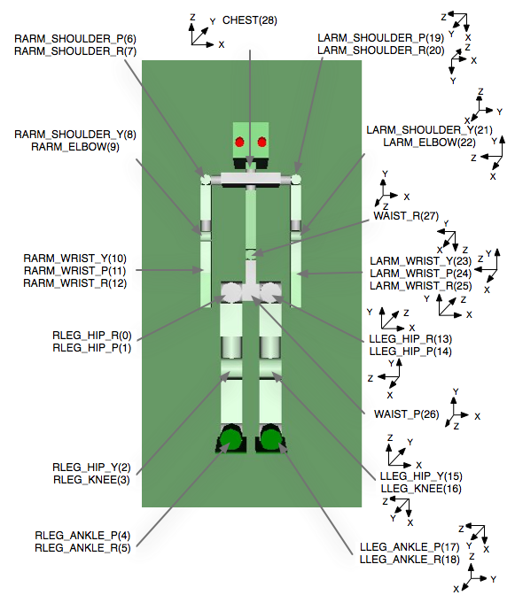
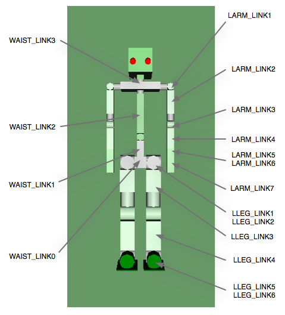

OverviewWith OpenHRP version 20001215, we could distribute a walk-pattern attached simple humanoid robot model, thanks to the cooperation of Prof.Takanishi from Waseda University. Here we are going to explain the contents of a Sample Humanoid Robot. Sample Humanoid RobotThe Sample Model (File: $OPENHRPHOME/etc/sample.wrl) is composed of 1 waist-joint (WAIST), 4 body-joints(WAIST_JOINT0 - CHEST), 2 head-joints (HEAD_JOINT0, HEAD_JOINT1), 16 arm-joints(LARM_SHOULDER_P - LARM_WRIST_R, RARM_SHOULDER_P - RARM_WRIST_R), and 14 foot-joints(LLEG_HIP_R - LLEG_ANKLE_R, RLEG_HIP_R - RLEG_ANKLE_R). It would be easy to figure out by referring the Joint-Segment layered structure shown below. Please refer Fig.2 and Fig.3, for more details about joint position, the coordinate-system of each joint, and the segment name corresponding with each link.
(Joint Joint Node Name : Segment Segment Node Name)
Humanoid SAMPLE
|
| # Root
+-humanoidBody
|
| # Upper half body
+-Joint WAIST : Segment WAIST_LINK0
| Joint WAIST_P : Segment WAIST_LINK1
| Joint WAIST_R : Segment WAIST_LINK2
| Joint CHEST : Segment WAIST_LINK3
| |
| | # Cameras
| +-VisionSensor VISION_SENSOR1
| +-VisionSensor VISION_SENSOR2
| |
| | # Left arm
| +-Joint LARM_SHOULDER_P : Segment LARM_LINK1
| | Joint LARM_SHOULDER_R : Segment LARM_LINK2
| | Joint LARM_SHOULDER_Y : Segment LARM_LINK3
| | Joint LARM_ELBOW : Segment LARM_LINK4
| | Joint LARM_WRIST_Y : Segment LARM_LINK5
| | Joint LARM_WRIST_P : Segment LARM_LINK6
| | Joint LARM_WRIST_R : Segment LARM_LINK7
| |
| | # Right arm
| +-Joint RARM_SHOULDER_P : Segment RARM_LINK1
| Joint RARM_SHOULDER_R : Segment RARM_LINK2
| Joint RARM_SHOULDER_Y : Segment RARM_LINK3
| Joint RARM_ELBOW : Segment RARM_LINK4
| Joint RARM_WRIST_Y : Segment RARM_LINK5
| Joint RARM_WRIST_P : Segment RARM_LINK6
| Joint RARM_WRIST_R : Segment RARM_LINK7
|
| # Left Leg
+-Joint LLEG_HIP_R : Segment LLEG_LINK1
| Joint LLEG_HIP_P : Segment LLEG_LINK2
| Joint LLEG_HIP_Y : Segment LLEG_LINK3
| Joint LLEG_KNEE : Segment LLEG_LINK4
| Joint LLEG_ANKLE_P : Segment LLEG_LINK5
| Joint LLEG_ANKLE_R : Segment LLEG_LINK6
|
| # Right Leg
+-Joint RLEG_HIP_R : Segment RLEG_LINK1
Joint RLEG_HIP_P : Segment RLEG_LINK2
Joint RLEG_HIP_Y : Segment RLEG_LINK3
Joint RLEG_KNEE : Segment RLEG_LINK4
Joint RLEG_ANKLE_P : Segment RLEG_LINK5
Joint RLEG_ANKLE_R : Segment RLEG_LINK6
 Fig 2. Position and coordinate-system of each Joint on robot  Fig 3. Segment name corresponding to each Link on robot VisionSensorAs described above, there are two Vision Sensors attached under the CHEST. CHEST +-VisionSensor VISION_SENSOR1 +-VisionSensor VISION_SENSOR2 The coordinate system of the Vision Sensors is shown below in Fig 6. The red line is represents X-axis, likewise green line for Y-axis and blue line for Z-axis. The Vision vector(the direction where the camera is facing at) is the opposite direction of Z-axis (0, 0, -1). Please refer the file "sample.wrl", for concrete numerical values of positional posture. Fig 6. Coordinate-system of the Vision Sensors |